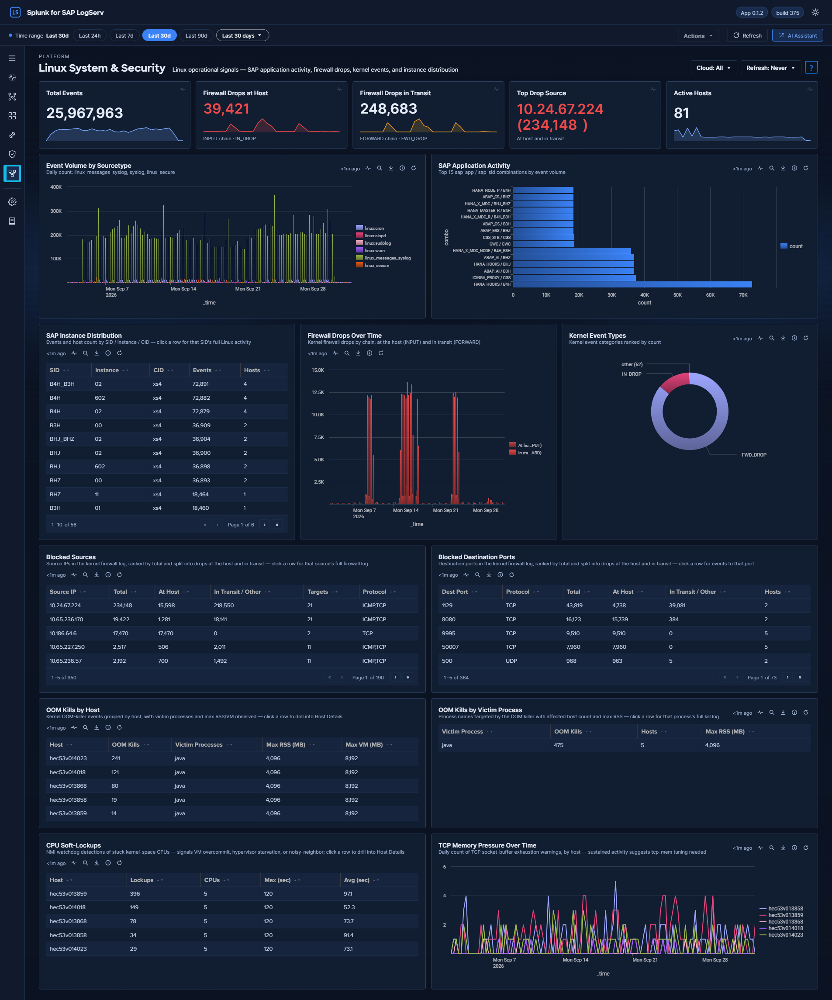

Linux System & Security¶

Why This Dashboard Matters¶
The Linux dashboard provides OS-level visibility for the hosts running SAP applications. Most SAP ABAP and HANA systems run on Linux, making OS-level monitoring essential for understanding the infrastructure beneath the application layer. This dashboard combines SAP-aware context (SID, instance, application identification from syslog) with kernel-level security monitoring (firewall drops at the host and in transit, and kernel events).
Requires¶
- Sourcetypes:
linux_messages_syslog,linux_secure,linux:cron,linux:warn,linux:sudologandlinux:slapd(plus older data indexed assyslog). - Search-head add-ons: none for this dashboard. See the note below about the Splunk Add-on for Unix and Linux.
- Dashboard Data row: Linux System & Security / Network Perimeter on Settings → Dashboard Data (the same row also feeds Firewall Drops in Transit on Network Perimeter). On a new install, Run backfill there seeds the last 30 days by default (60, 90, 180 or 365 days, or a custom range, are also offered); without a backfill the panels fill one hour at a time. See Backfilling on first install.
The Splunk Add-on for Unix and Linux (833) is not needed for these panels
The LogServ App parses linux_messages_syslog, linux:cron, linux:warn, linux:sudolog and linux:slapd itself, and this dashboard reads the firewall and kernel fields of linux_secure straight from the raw lines. So every panel here works without the Splunk Add-on for Unix and Linux (Splunkbase 833).
The App ships no field extraction for linux_secure. Install add-on 833 on the Search Head when you need its CIM field mapping of linux_secure, for Splunk Enterprise Security or for your own CIM-based searches. Like the Windows add-on, it is search-time content: installing it on a heavy forwarder or indexer does nothing for these events. See Supported Log Types and Where Each Package Goes.
Panels¶
- Total Events – Aggregate event count across all Linux sourcetypes
- Firewall Drops at Host – Count of kernel firewall drops of packets addressed to the host itself:
IN_DROPlines, from the INPUT chain - Firewall Drops in Transit – Count of kernel firewall drops of packets the host was routing on to another system:
FWD_DROPlines, from the FORWARD chain. Only hosts that forward traffic, such as VPN or IPsec gateways, log these. A packet passes through one chain or the other, never both, so the two KPIs add up without double counting - Top Drop Source – Single-value panel showing the source IP that appears in the most firewall log lines, in the format
<IP> (<count>). The count covers drops at the host and in transit together, plus any other firewall line that names that source; it is the top row of the Blocked Sources table below, which has the full ranking — click any row there to open that source IP’s firewall log - Active Hosts – Count of distinct Linux hosts reporting data.
- Event Volume by Sourcetype – Trend over time across
linux_messages_syslogplus the dedicated Linux sourcetypes (linux:cron,linux:warn,linux:sudolog,linux:slapd) andlinux_secure. Events indexed under the oldersyslogsourcetype are counted too, so older data still shows. - SAP Application Activity – Horizontal bar chart of the top 15
sap_app/sap_sidcombinations by event volume (the combination label sits on the y-axis so long application names stay readable) - SAP Instance Distribution – Table of SAP instances with event counts by SID, instance number, and CID
- Firewall Drops Over Time – Kernel firewall drops over the selected range, split by chain into two series: At host (INPUT) (
IN_DROP) and In transit (FORWARD) (FWD_DROP) - Kernel Event Types – Donut breakdown of kernel event categories parsed from the
kernel:prefix — the ALL-CAPS tag that follows the kernel timestamp, such asIN_DROP,FWD_DROP,ACPIorEXT4(at least two leading capitals, digits allowed after them). Kernel lines that start with an ordinary sentence-case word (“Write cache…”, “I/O error…”) carry no tag and are not counted here - Blocked Sources – Table of source IPs seen in firewall events, ranked by Total and split into At Host and In Transit / Other, with target counts and protocols
-
Blocked Destination Ports – Table of destination ports targeted by firewall traffic, ranked and split the same way, with the number of hosts
The two Blocked tables count every firewall event carrying a source IP / destination port. At Host is the
IN_DROPevents among them; In Transit / Other is the rest: nearly allFWD_DROP, plus any other firewall line logged with a source or port. ICMP carries no destination port, so ICMP drops appear in Blocked Sources but not in Blocked Destination Ports. - OOM Kills by Host – Kernel OOM-killer events per host, with the max process RSS/VM observed - OOM Kills by Victim Process – Process names targeted by the OOM killer - CPU Soft Lockups – Kernel soft-lockup events per host and CPU, with max/total stall duration - TCP Out-of-Memory Timeline – Kernel TCP memory-pressure events over time
What to Look For¶
- Firewall drop spikes – A sudden increase in Firewall Drops at Host may indicate port scanning, network reconnaissance, or a brute-force attack against SAP services.
- Top Drop Source concentration – If the Top Drop Source KPI shows a single IP accounting for the overwhelming majority of drops, that IP is either a misconfigured internal system hammering a blocked port (check if it’s an internal SAP host that recently changed config) or a persistent external scanner. The Blocked Sources table below has the full ranking, and its At Host and In Transit / Other columns show whether that source was reaching the host itself or systems the host routes to.
- Drops in transit – Only a host that routes traffic onward, such as a VPN or IPsec gateway, logs
FWD_DROP. On a gateway, drops in transit are traffic its forwarding policy does not allow, often a monitoring or discovery job pinging or probing the systems behind it, and they can outnumber the drops at the host many times over. Find the source in the Blocked Sources table and the job that owns it, then either allow that traffic or stop the job. Drops in transit on a host that is not meant to route at all mean IP forwarding is switched on there (container runtimes and Kubernetes nodes do this) and deserve a look. - New blocked source IPs – Unfamiliar source IPs appearing in the Blocked Sources table should be investigated, especially if they target SAP service ports (3200-3299 for dialog, 8000-8099 for HTTP, 30015 for HANA).
- SAP application distribution changes – If the SAP Application Activity chart shows a previously active SID or application going silent, it may indicate a process crash or configuration issue.
- OOM kills and soft lockups – The OOM Kills panels and CPU Soft Lockups table are the crash-adjacent signals on this dashboard: a process repeatedly targeted by the OOM killer, or recurring soft lockups on one host, may affect SAP system stability.
- Port targeting patterns – The Blocked Destination Ports table reveals which services attackers are targeting. Ports associated with SAP services warrant immediate attention.
Related Dashboards¶
- Network Perimeter – firewall drops beside proxy and DNS traffic.
- Host Details – where the OOM and CPU soft-lockup rows lead.
- Change & Configuration Activity – sudo and user-management commands on these hosts.
Where the data comes from
Every panel is summary-backed — there are no live raw scans. Panels read nine metrics of the
logserv_linux_rollup KV Store collection (total, hosts, fw, kernel,
sapapp, sapinst, oom, lockup, tcpoom), populated at minute :17 of every hour by
logserv_linux_aggregate from the seven Linux sourcetypes (linux_messages_syslog,
linux_secure, linux:cron, linux:warn, linux:sudolog, linux:slapd, plus legacy syslog).
The firewall fields (SRC= / DST= / DPT= / PROTO= and the drop/accept action) and the kernel
event names are extracted from the raw events at aggregation time, and the OOM / CPU-lockup / TCP
memory metrics store sums and maxima so the tables reconstruct averages and worst cases exactly.
Firewall Drops in Transit and Firewall Drops Over Time read the kernel metric, which counts the kernel tag of every linux_secure line (IN_DROP, FWD_DROP, …) per hour. Firewall Drops at Host, Top Drop Source and the two Blocked tables read the fw metric, whose action field records only IN_DROP and IN_ACCEPT; a FWD_DROP line is stored there with no action, which is why the Blocked tables count it under In Transit / Other.
Summary-backed panels switch automatically to their exact raw-equivalent search when the selected window is shorter than 90 minutes, so sub-hour investigation stays real-time. The collection keeps 365 days of hourly history (trimmed by a daily retention search). The global Cloud dropdown filters the summaries through the cloud_provider dimension stored in every rollup row. Full schedule and freshness reference: Dashboard Data: Backfill and Freshness.